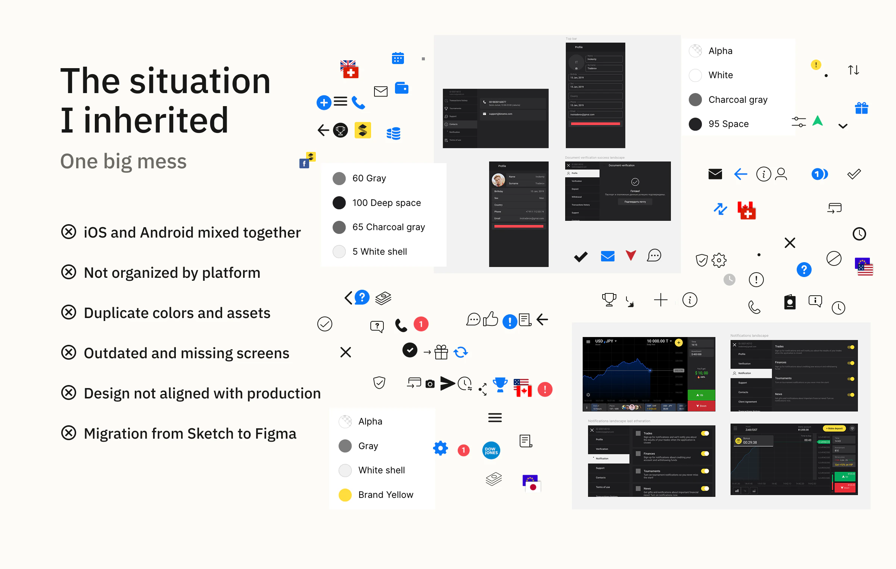
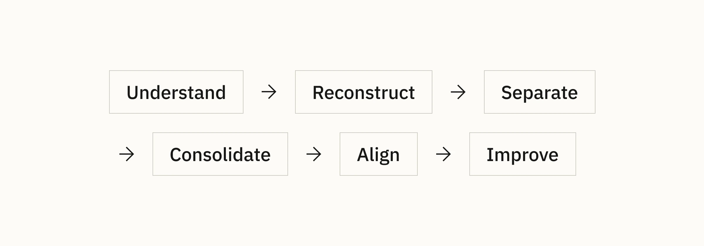
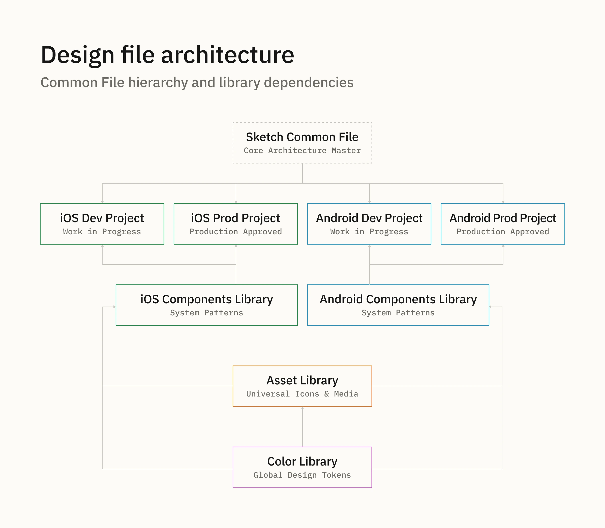
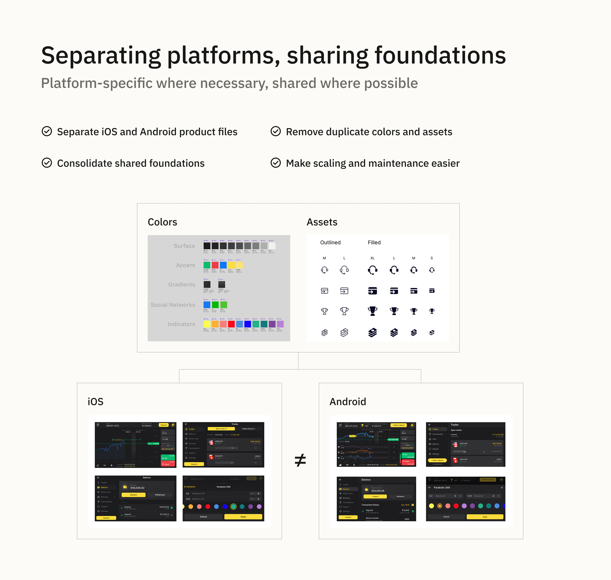
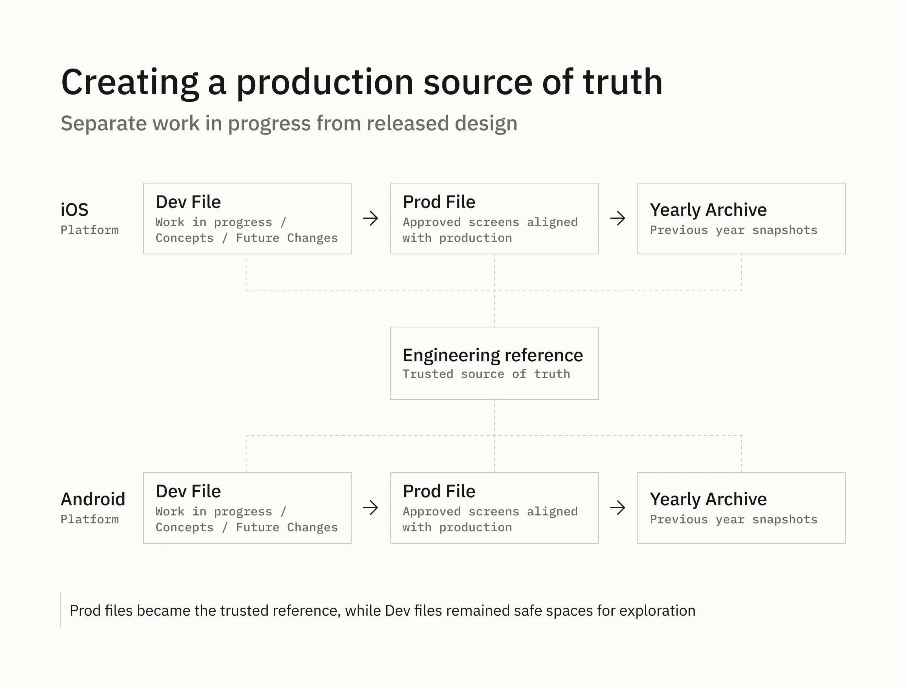
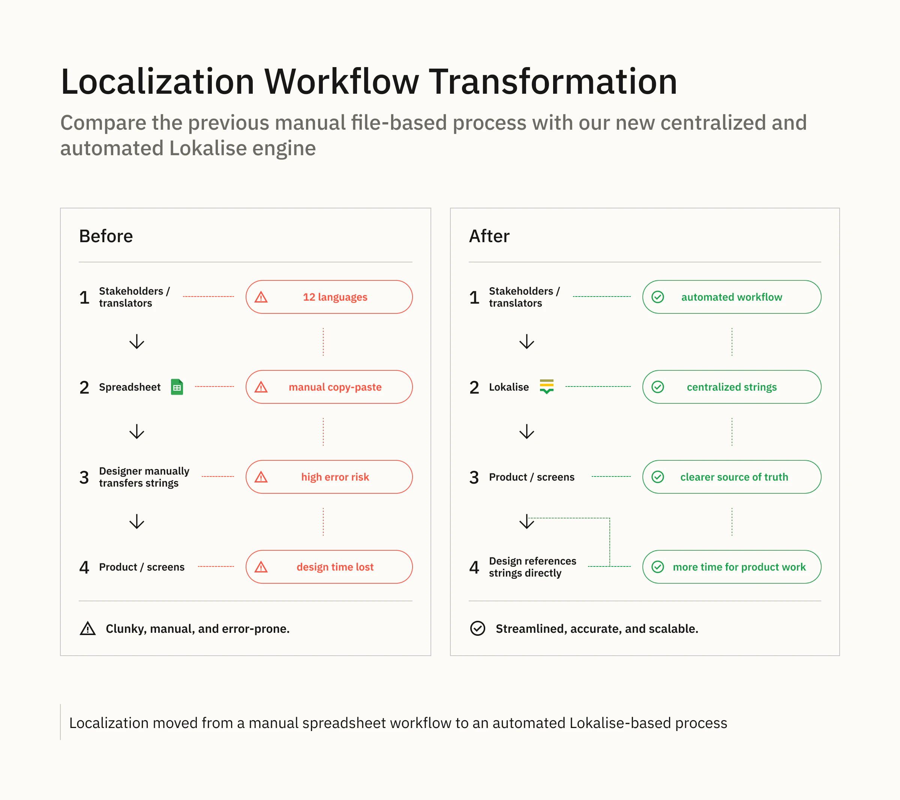
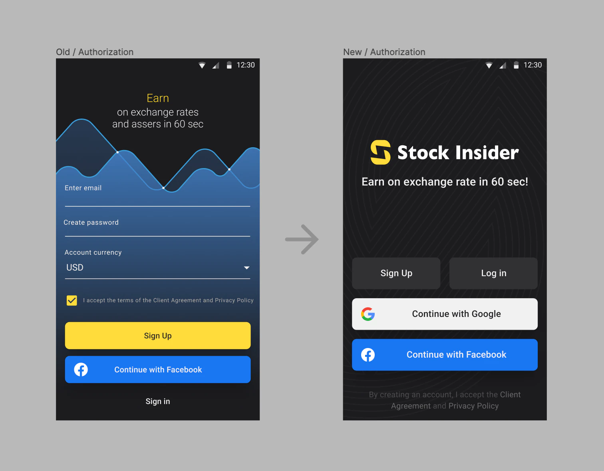
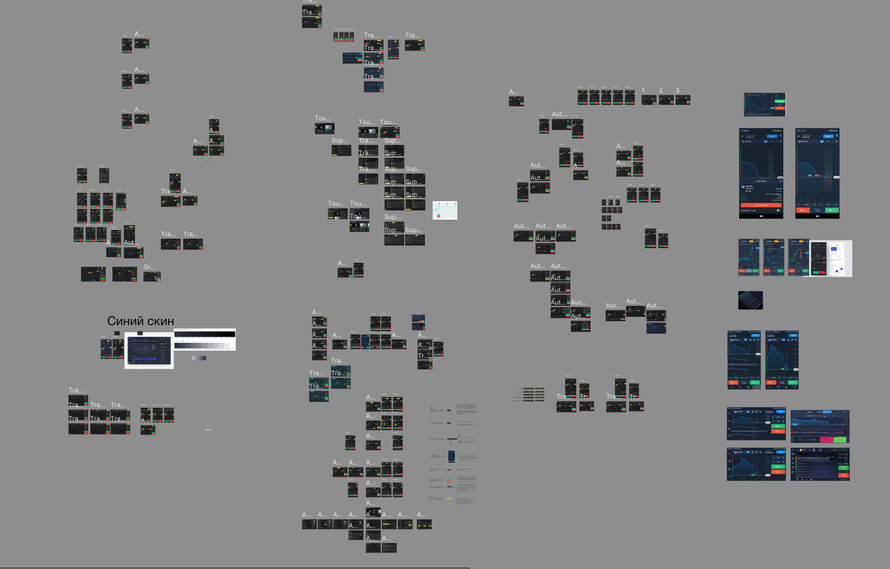
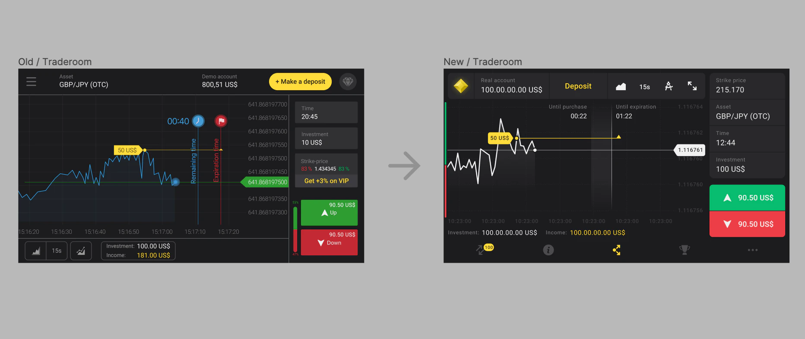
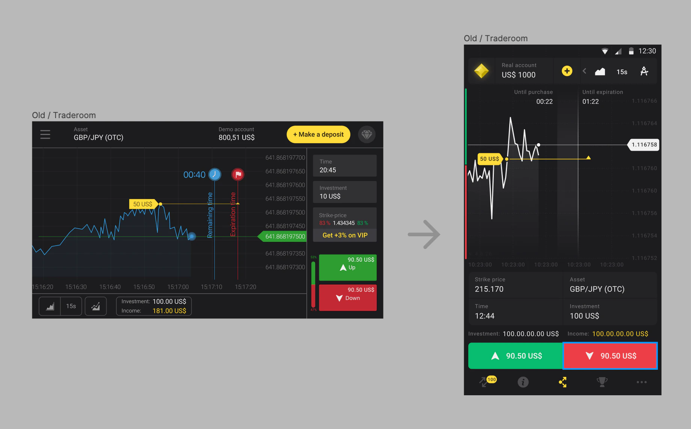

Karuna · Product + system
Building a scalable design ecosystem
I rebuilt a fragmented multilingual design environment into a reliable product foundation for iOS and Android, aligned with production and ready to support an incremental redesign.
Overview
Stock Insider (name changed) is a multilingual CFD trading education app for iOS and Android with more than 10 million downloads. When I joined the team, the design files were difficult to navigate, iOS and Android screens were mixed together, and the design no longer reliably reflected the production app.
At the same time, the team was moving from Sketch to Figma. Instead of starting with a visual redesign, I used the migration as an opportunity to rebuild the design infrastructure first.
My role
I was the product designer responsible for restoring order in the existing design environment and making it reliable for both design and engineering. I reconstructed the product structure, separated platform-specific work, consolidated shared foundations and assets, introduced a production-aligned source of truth, and initiated and coordinated the move to an automated localization workflow.
The situation I inherited
- iOS and Android screens lived in one large, unstructured file.
- Design and production had drifted apart, so it was difficult to know which screens were current.
- Components, colors, icons and other assets were inconsistent or duplicated.
- Developers and design spent time clarifying which layouts were ready and which were still work in progress.
- Localization for 12 languages relied on a manual spreadsheet workflow that was both time-consuming and error-prone.

Approach
I deliberately avoided changing the product interface at the beginning. First, I needed to understand the existing product, reconstruct missing screens and flows, and create a stable design environment that could support further product work.

Reconstructing the product
I started by mapping the existing files and identifying which screens belonged to iOS and which belonged to Android. I restored missing screens and flows, cleaned up naming, and worked with developers to understand how the design structure related to the implemented product.
This reconstruction was important before introducing a new architecture: I wanted the structure to emerge from the actual product rather than from an abstract library model.

Separating platforms, sharing foundations
I split the product layouts into separate iOS and Android files, but quickly noticed that much of the underlying visual language was already shared. Colors were very similar across platforms, and icons, flags and other assets were largely identical.
Instead of maintaining duplicated foundations, I consolidated them into two shared libraries: one for colors and one for reusable assets such as icons, flags and illustrations. Together with developers, we reviewed the color sets, removed unnecessary duplicates, aligned similar values where small implementation changes were possible, and introduced consistent naming. I connected both shared libraries to the platform-specific product files.
The principle was simple: platform-specific where necessary, shared where possible.

Creating a production source of truth
As the files became more structured, another problem became obvious: developers still could not always tell whether a layout represented work in progress, an approved design, or what was actually in production. Small implementation changes and unfinished product areas regularly led to discussions about which version was correct.
Engineering raised the need for something closer to versioning: a place where the team could work only with design that everyone trusted. Together, we introduced two files for each platform:
- Dev — work in progress, concepts and future changes.
- Prod — only approved screens aligned with the production application.
Once a change was approved and released, I moved the final design into the Prod file. This gave engineering a reliable design source of truth while keeping the Dev files safe for exploration and unfinished work. In practice, developers stopped needing to ask which layout was current and used the Prod files as their regular reference for the implemented interface.
Because this was an early stage of Figma and the workflow did not provide the history we needed, we also introduced yearly archives. At the end of each year, I archived the previous production files and created new copies, preserving a lightweight history of the product's design states.

Fixing the localization workflow
Localization had gradually become a design responsibility even though it was not part of the core design role. Supporting 12 languages meant manually maintaining translations in a spreadsheet, including languages I could not verify myself. The process was slow, distracting and carried a high cost of error.
I brought together the relevant stakeholders to review the workflow and discuss alternatives. We agreed to move translations into Lokalise, where approved strings could be stored centrally and used by the product instead of being manually transferred through an ad hoc spreadsheet.
The workflow was automated through the service. This removed the need for me to manually transfer translations, reduced the risk of transcription errors, and freed more design time for product work. It also created a clearer source of truth for localized content.

What this enabled
Once the design infrastructure was stable, localization was no longer a manual bottleneck, and screens could be assembled from reusable components, we were ready to improve the product itself.
I worked with the product manager and developers on a redesign concept and then introduced it gradually. The new system had to support both iOS and Android, two screen sizes, portrait and landscape orientations, and 12 languages. For each platform, a screen could require up to four layout variants before localization was considered.
The redesign became a consequence of the infrastructure work rather than its starting point: we could now change the product on top of a design environment that was structured, shared where possible, and aligned with production.
Impact
- Developers stopped spending time clarifying which layouts were current and used the Prod files as the reference for the implemented interface.
- The platform-specific product files were supported by two shared libraries: colors and reusable assets.
- Localization moved from a manual 12-language spreadsheet workflow to an automated Lokalise-based process.
- The design infrastructure remained in use for at least the next year and a half.
- The team's approach was considered successful enough that there were plans to spread parts of the experience across the wider company before a later reorganization changed the team structure.
Selected redesign outputs
One example of the redesign applied to the authorization flow:

Exploration of multiple design directions before converging on the final solution:

For the traderoom, we reduced visual noise, surfaced frequently used tools, moved primary navigation from a burger menu to a tab bar, and reduced unnecessary color accents. The redesign also introduced portrait orientation for the traderoom, which had previously been available only in landscape:


⬆️ [Back to top](/d6094d8b9dd44a5e99a20abf3c422414?pvs=25#f6ab8c4a63154a31b87edb2338fe29bb)